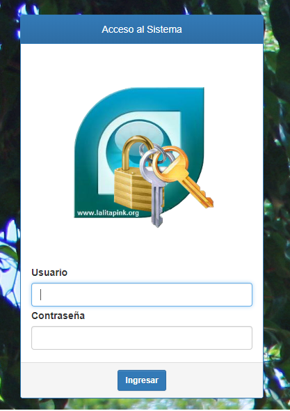
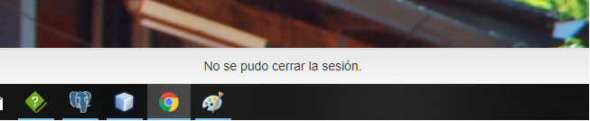
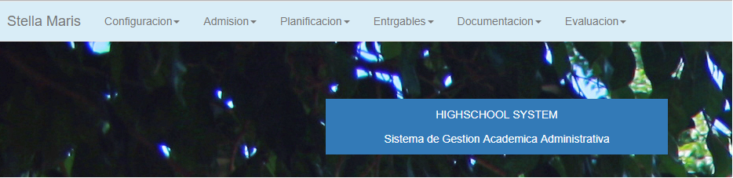
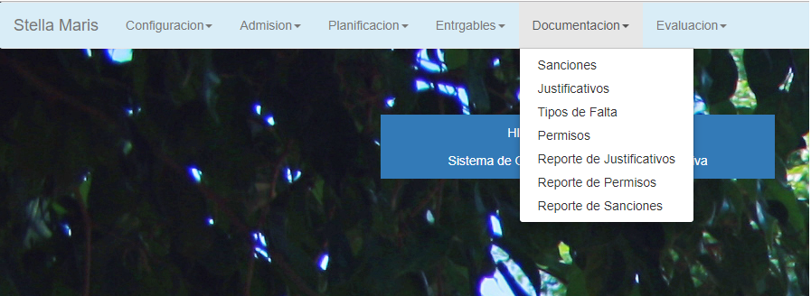
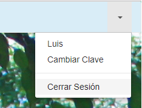
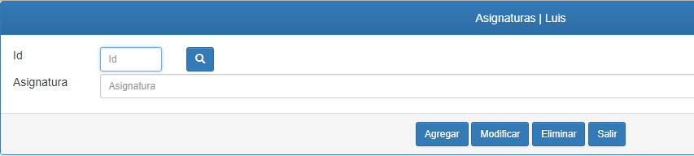
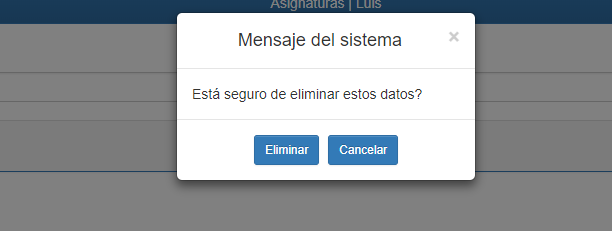
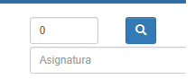
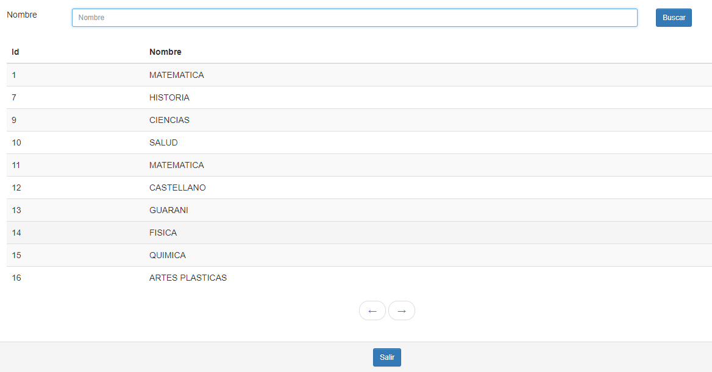
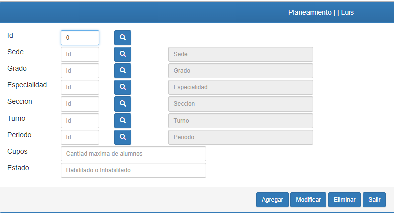

Formularios
Manual de Usuario
En esta sección aprenderá acerca de los formularios, el sistema que utilizara esta compuesto en gran parte de estos.
Cabe resaltar que existen formularios "básicos" que deben ser cargados con datos indispensables para poder realizar proceso mas compuestos.
Formulario de acceso: El sistema cuenta con un formulario de acceso, el cual sirve para el inicio de sesión de los usuarios.

En la imagen se puede apreciar el formulario de inicio de sesión, aquí debe ingresar en los campos correspondientes los datos solicitados, como se puede apreciar, es bastante intuitivo por lo que no se producirán problemas de entendimiento.
En el campo "Usuario" deberá ingresar su nombre de usuario el cual sera proveído por el administrador del sistema,
dentro del campo contraseña deberá ingresar su contraseña el cual también sera proveído por el administrador.
Estos datos proveídos por el administrador deben ser bien cuidados, y solo saberlo usted y el administrador quien lo ha provisto
Una vez ingresados estos datos, deberá presionar el botón "Ingresar" el cual le enviara al "Menú Principal" del sistema, si los datos ingresados no son correctos el sistema le informara de ello, solicitando su nuevo ingreso de los datos

En la sección baja de la pantalla del computador, aparecerá un pequeño zócalo donde se mostrara los mensajes que el sistema le brinda, aquí podrá saber cual fue el error que se ocasiono o la razón por la cual no se pudo realizar alguna acción solicitada.
Menú Principal: Al haber iniciado sesión exitosamente aparecerá el Menú Principal el cual sera diferente por cada usuario que inicie sesión, así que no se preocupe si es diferente al de su compañero de trabajo.

En el menú, en la esquina superior izquierda aparecerán pequeñas pestañas con flechas a su lado que indican que poseen opciones desplegables, la cantidad de pestañas dependerá del usuario que haya iniciado sesión.

Como se ha mencionado anteriormente, las pestañas poseen opciones desplegables, las opciones varían en cantidad y nombre de acuerdo al tipo de pestaña que aparece en el menú de inicio.

En la esquina superior derecha del menú de inicio, se encuentra una flecha de opciones desplegables, el cual muestra el usuario que ha iniciado sesión y la opción de poder cerrar sesión, el cual volvería a mostrar la pantalla del Formulario de acceso.
Antes de comenzar con la sección de los Formularios para el Registro, debemos aclarar que existen tres tipos de Formularios los "Básicos", "Compuestos" y de "Detalles".
Formulario Básico: Los Formularios básicos están compuestos principalmente de un solo campo para el ingreso de datos, en algunos casos poseen más de uno, los campos son lo espacios donde usted puede escribir e ingresar los datos que se indican.

Los Formularios básicos se ven de esta forma, como habíamos mencionado pueden tener más de un campo, los campos cuentan con validaciones, es decir, medidas de seguridad para evitar el mal ingreso de algún dato, existen campos que solo pueden contener letras, otros que solo pueden contener números y otros que pueden contener ambos, si usted intenta ingresar algún dato erróneo en el campo a través de las medidas de seguridad mencionadas; el sistema solo no escribirá aquello que se intento ingresar.
Los formularios son bastante intuitivos, muestran en que campos se deben ingresar los datos manejados, debe empezar siempre por los formularios básicos pues los demás Formularios que vienen a continuación dependen de estos.
Ahora bien una vez ingresado los datos en los campos correspondientes encontrara un fila de botones en la sección inferior del formulario los cuales funcionan de la siguiente manera:
Agregar: este botón permite guardar todos los datos ingresados en los campos.
Modificar: este botón le permite poder modificar algún dato que haya registrado, el dato que desea modificar debe tener previo registro en el sistema y haber sido recuperado desde el buscador.
Eliminar: este botón le permite eliminar un registro del sistema, previa busca realizada con el buscador

Antes de poder eliminar el registro del sistema, aparecerá un pequeño cuadro que le consultara si desea eliminar los datos, si da en el botón "Eliminar" los datos serán eliminados, si da en el botón "Cancelar" los datos seguirán registrados sin cambios.
Salir: este botón permite regresar al "Menú Principal"
El buscador: es un botón que se encuentra en la parte superior del formulario con un icono de lupa el cual permite acceder a otro formulario que le mostrara los diferentes registros que existen.

Una vez haya realizado el click sobre el botón lo enviara al formulario de búsqueda que se muestra en la imagen siguiente.

En el buscador aparecerán de forma automática todos los registros con los que se cuenten, para poder recuperar lo datos solo se debe dar un click sobre el registro que se desea recuperar y de forma automática le regresara al formulario donde se encontraba anteriormente con los datos ya recuperados para su uso.
Existe un campo en la parte superior del buscador el cual permite introducir un dato especifico (el dato a ingresar puede variar dependiendo del formulario en el que se haya ingresado), una vez ingresado el dato se debe presionar el botón "Buscar", esto filtrara los datos y mostrara aquel que ha pedido.
El botón "Salir" lo regresara el formulario en el cual estaba anteriormente.
Los Formularios faltantes poseen la misma mecánica de uso, en el funcionamiento de los botones, carga de datos y buscador.
Formularios Compuestos: estos son los formularios que dependen de los básicos para poder realizar los registros, a continuación se muestra la forma en la que se presentan.

La diferencia que presentan los Formularios Compuestos de los Básicos es la existencia de campos "de solo lectura", es decir, campos en donde el usuario no puede escribir datos ni modificarlos.
Para poder cargar algún tipo de dato en este tipo de campos, solo se deben recuperar utilizando el buscador el dato que se desea ingresar en dicho campo.
Los campos de solo lectura se diferencian de los demás por poseer un color gris en ellos. Los campos que no posean este color, pueden ser escritos o modificados.
Created with the Personal Edition of HelpNDoc: Free Qt Help documentation generator